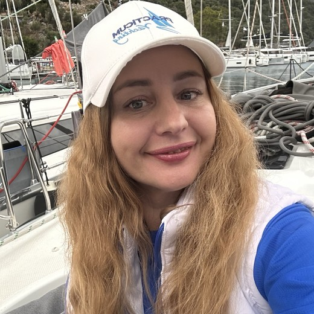
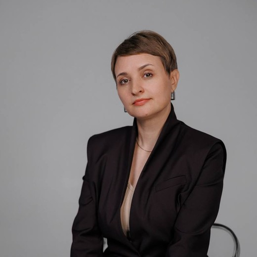
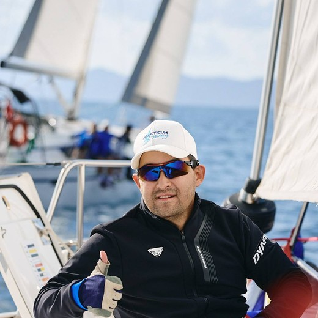
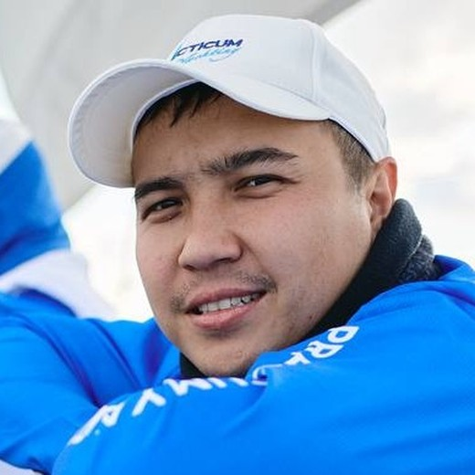

Сопровождение после программы
Акселератора, который остаётся с командой после программы
Работаем с командой 12 месяцев после Demo Day: раунд, найм, продажи, следующие инвесторы.
Берём проекты с готовым MVP. За 12 недель выстраиваем финмодель, ставим продажи и собираем упаковку. Дальше — личные знакомства с фондами и ангелами Европы, США и Ближнего Востока, до сделки. Рынок для наших команд — не только Грузия.
Деньги на рост приходят не от программ, а от инвесторов. Мы приводим инвесторов со всего мира.
Тбилиси — база. Команды — из Грузии, СНГ, Европы и Ближнего Востока. Инвесторы — те же регионы плюс США.
Пять шагов, порядок не меняем. Деньги приходят после того, как есть продукт, цифры, продажи и упаковка.
Четыре вещи, которых не даёт ни одна работающая программа в стране. Это и есть причина идти в I4 Group, а не только в госакселерацию.
Размер доли и состав пакета — проект условий для первой когорты. Финальные цифры фиксируются договором, а не сайтом.
Две программы, один результат — следующий раунд. Каждая заканчивается тем, что можно показать инвестору.
IRA расшифровывается как Investment Readiness Accelerator — «акселератор готовности к инвестициям». 12 недель на метрики, финмодель, документы сделки и встречи с фондами. Для команд с работающим продуктом.
Вход в Грузию для внешних команд: юрлицо, банк, команда, пилоты с местными клиентами.
Шесть работ, после которых у команды есть документы и цифры для разговора с фондом. Без «доступа к сообществу» и мотивационных лекций.
Смотрим, что уже работает: продукт, первые клиенты, воронка. На входе нужен MVP и хотя бы один платящий клиент. На выходе — таблица метрик, по которой фонд принимает решение.
Выручка, расходы, найм, runway. Сценарии — базовый, рост и кризис; модель отдаём в редактируемом файле.
Разбираем канал, цену и повторные продажи. Собираем план продаж на 12 месяцев с цифрами, а не с обещаниями. Здесь же — сессии с менторами-основателями, которые сами прошли раунд.
Дек на 10 слайдов, one-pager на английском, data room и пакет документов сделки за 10 рабочих дней, проверенный юристом.
Минимум пять личных знакомств с инвесторами под вашу стадию и отрасль. Каждая встреча — с разбором после.
Питч перед ангелами и фондами, затем 12 месяцев сопровождения: раунд, найм, продажи.
Пять шагов от карты фондов до term sheet. Это работа, а не рассылка дека по почте.
Собираем 40 целей на когорту: стадия, отрасль, география, размер чека, кто в фонде принимает решение по вашему рынку.
Дек на 10 слайдов, one-pager, data room: метрики, финмодель, cap table, юрдокументы. Фонд получает пакет, а не переписку.
Заходим через менторов, выпускников и диаспору. Минимум пять знакомств на команду под вашу стадию и отрасль.
Прогон питча с инвестором-ментором, разбор слабых ответов, вопросы, которые задаст due diligence.
Сопровождение переговоров, оценка, условия, юрист на вашей стороне. Дальше — закрытие раунда.
VC Европы, США и Ближнего Востока на pre-seed и seed, фонды с фокусом на Кавказ и CEE, объединения инвесторов из диаспоры, корпоративные инвесторы.
Список партнёрских фондов формируется под первую когорту: публикуем только тех, кто дал согласие на упоминание. Вывод на фонд не гарантирует инвестицию — решение принимает фонд.
Четыре направления. Первое — для основателей, остальные — для фондов и команд, которые заходят в Грузию.
12 недель подготовки к раунду: метрики, финмодель, питч, встреча с фондами.
Собираем группу частных инвесторов под вашу сделку: входят вместе, одного выбираем ведущим. Фонд — после двух когорт.
Demo Day и закрытые сессии с фондами и ангелами. Организация под ключ.
Основатели и топ-менеджеры как менторы: структурированные сессии и отчётность.
Три варианта участия. Команда выбирает до старта программы, условия фиксируются договором. Документы и сопровождение входят в программу — отдельных доплат нет.
Без платежа на входе. Мы зарабатываем на росте стоимости доли и остаёмся с командой 12 месяцев после Demo Day.
Для команд, которые не хотят отдавать долю на раннем этапе: программа и документы сделки за деньги, без участия в капитале.
Участвуем в раунде на тех же условиях, что и частные инвесторы: стандартный SAFE, без отдельного увеличения доли.
Размер доли или платы обсуждаем на созвоне и фиксируем договором — сайт не оферта. Подробнее об условиях →
Сколько нужно команде. Если инвесторов несколько, они входят одной сделкой на одинаковых условиях: один ведёт проверку и документы, остальные видят те же цифры и решают сами.
Три месяца в Тбилиси без переезда всей компании: юрлицо, счёт, офис, рабочее место для команды и пять встреч с потенциальными клиентами. По каждой встрече — отчёт. Итог: стоит ли выходить на рынок Грузии и с чем именно.
Investment Readiness Accelerator — «акселератор готовности к инвестициям». Название объясняет смысл: за 12 недель команда доводит метрики, финмодель, документы сделки и питч до состояния, в котором фонд готов рассматривать сделку. Программа заканчивается встречами с фондами и Demo Day — это подготовка к раунду, а не гарантия инвестиции.
Условия обсуждаем на созвоне и фиксируем договором. На сайте цифр не публикуем: они зависят от стадии, размера чека и того, что команде нужно от программы.
Берём команды с работающим продуктом и первыми клиентами: без этого фонду нечего смотреть. Если продукта ещё нет — возвращайтесь, когда появятся первые платящие клиенты.
Частные инвесторы, которые вкладывают вместе с нами, и партнёрские фонды. Инвестор входит по стандартному документу SAFE.
Нет. Мы готовим к раунду и организуем встречи, но решение принимает инвестор. Гарантий доходности не даём и не продаём «участие в раунде».
Мы собираем карту фондов под вашу стадию и отрасль, готовим материалы на английском и data room, знакомим лично и ведём переговоры до term sheet. Инвестицию это не гарантирует: решение принимает фонд.
Для внешних команд есть отдельная программа: три месяца в Тбилиси — юрлицо, счёт, офис, команда и пять целевых встреч с клиентами.
Не конкурируем с государственными программами, а стыкуемся с ними: они дают обучение, мы — капитал и выход на внешние рынки.
Четыре действующих предпринимателя. Каждый отвечает за своё направление и работает с командами лично: продажи, финансы, производство, международные рынки.

Даёт командам: управление без собственника в операционке, экономику маркетплейса, расчёт доходности и рисков.

Даёт командам: выстроенные процессы, склад, закупки и продажи без собственника в операционке.

Даёт командам: производство для пилотов, экспертизу в промышленности и закупках, канал продаж через мебель и интерьер.

Даёт командам: выход на рынки Латинской Америки, правовые и финансовые схемы для нескольких юрисдикций, опыт работы с фондами и публичными рынками.
Заполните форму — текст заявки сформируется сразу и сохранится в этом браузере. Отправку на почту подключим после регистрации домена.
Все поля, кроме ссылки, обязательны. Прототип: отправка на почту не подключена, текст заявки сохраняется в браузере, копируется кнопкой.